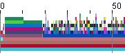
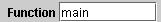
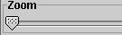
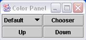
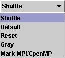
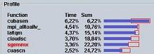
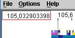
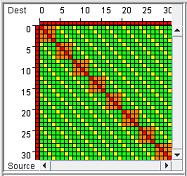
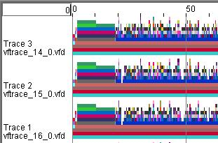

Table of Contents
Vfview is a program for the graphical analysis of run time profiles given
in the so-called vfd file file format. It is based on Vftrace (visual
function trace), but the vfd files can in principle be origininated from any
program. Vfview presents a timeline with the call stacks of the application's MPI
tasks and OpenMP threads represented by color-coded bars. Particular time intervals
may be studied in more detail by zooming in. While moving the pointer across the
call stacks the time and function name fields are updated automatically.
MPI communication can be displayed in separate windows, e.g. a detailed communication
matrix showing each rank.
Vftrace (visual function trace) is a tool to analyze a (parallel) application using timer and/or hardware event counter information to produce a detailed profile table and a set of call stack trace files. See the man pages vftrace(1) and vftrace(7) for information how to compile, link and execute an application with the required instrumentation to generate profiles and trace files.
TOPBelow, there are some viewer snapshots representing a number of features, which are discussed in detail in the sections following the table.
|
 |
Functions are displayed as stacked bars, representing the call stacks. |
|
 |
The function name field is located at the bottom of the vftrace window. |
|
 |
A slide bar enables zooming in to max. 100000x, giving detailed information in any time interval. |
|
 |
A color panel gives access to various color definition options. |
|
 |
Functions can be color-coded using arbitrary colors selected from a color chooser. The parallel routines may be highlighted by color-coding the MPI routines, while rendering the application routines in gray. Or by a combination of these choices. |
|
|
The progress bar located in the lower left-hand corner of the scroll panel
shows how much of the trace image has been processed (initially, or
between horizontal scroll and zoom operations). |
|
 |
A profile graph presents the runtime profile of a particular time interval. To make this panel visible, select Profile panel from the menu Options. |
|
 |
The time field is located in the upper left scroll pane corner. |
|
 |
The communication graph shows the message intensity between MPI ranks. To make this panel visible, select the menu Options > Comm Matrix. |
The input files for the viewer are generated via function instrumentation, i.e.
each time a function is entered and / or exited, book-keeping is made about
the time spent, hardware counters etc. This information is written into vfd files.
Currently, the only tool to support the vfd format is Vftrace.
There are two levels of detail when gathering information (each one with its
specific advantages and drawbacks)::
Tracing: Log the time for every function entry and exit, irrespective of its duration.
Sampling: Instead of tracing, one can sample the application’s call stack by interrupting the program at regular intervals, unwind the call stack and save it in the trace file.
The low resolution is sufficient for the purpose of obtaining a reasonable overview of the application’s behavior. To locate parallelization timing problems (critical regions, load balance, send/receive patterns, etc.), more accuracy may be needed.
Vftrace combines both methods: Every function entry and exit is timed, but only after a specific minimum time interval the current call stack is recorded in the trace file. This method does not require the program to be interrupted by a timer alarm (operating system involvement introduces more overhead).
To capture time-critical function calls, such as the OpenMP parallel regions and the MPI functions, these events can be recorded immediately, irrespective of the time relative to the sampling interval.
TOPRun Vfview by extracting the .jar-file:
java -jar vfview <list of vfd files>
Alternatively, open the trace file(s) by using the file chooser: menu File > Open.
When Vfview reads in the trace (vfd) files, it merges them into one single binary file with the suffix std. This is called multiplexing. Currently, there is no way to specify the output file name. Each time a set of vfd files is read in, the .std file is overwritten. If you want to save the multiplexed file, rename it or move it to a different location before loading the next set of trace files.
Multiplexing takes time
The multiplexing process may take some time for a large number of trace files. The progress bar and the time field give an idea of how much time it will take. However, the generated .std file can be used for a much faster startup of the program by reading it in like any trace file
java -jar vfview file.std
Mixed experiment trace files
Mixing trace files from two different runs, e.g. using a command similar to
vftrace_[0-3]_0.vfd ../serial/vftrace_0_0.vfd
is possible, but will confuse the viewer when building the communication matrix. This is a known limitation of version 1.8.0 and later. Kill the viewer manually and rerun using the *.std file. The communication matrix will be empty.
TOPThe following command line options are supported:
| -help | Print an overview of possible options |
| -debug n |
Set the debug level to n; produces debug information on standard output.
The higher the level, the more output is
printed. With n set to 1, a call tree is printed for each thread at normal program termination. This is the only interesting level for end users. (The higher numbers are less useful for the end user than for the author). |
| -mintime t | Ignore samples recorded before time t (real in seconds). |
| -maxtime t | Ignore samples recorded after time t (real in seconds). |
| -warranty | Print the license agreement. |
 Once the trace files have been processed, the traces are displayed. A time axis is shown at the top of the trace graph (numbers in seconds). Move the pointer across the scroll pane and watch the time and function name fields change.
To mark a specific time, left-click on the trace graph on that point in time. A vertical red line represents the bookmark for this time. You will also notice, that the graph will move slightly, moving the bookmark to the center of the scroll pane.
To remove all bookmarks, select Remove bookmarks in the Options menu.
The time field in the upper left corner of the trace graph window displays absolute time for the current pointer position in the graph. When pressing the shift key the time is reset to zero for the current pointer position T0. Moving the pointer will now update the time field with the time relative to T0. Releasing the shift key restores the absolute time presentation.
There is a little problem when trying this the very first time (see Known Problems below).
Several windows use the position of the pointer to continuously update their content (e.g. communication matrix, MPI table). When changing from one to another window, moving around in the trace frame thus changes the information in these windows. To avoid this, press the escape key to freeze the information for the current pointer position. The pointer can now be moved to another window or menu without changing the information fields. By reentering the trace graph the freeze is undone.
TOP
Drag the zoom slider bar to zoom in or out. The trace graph will be enlarged
in real time, but the graph will only be updated with more detailed
information once the slider is released. Until then, the zoomed-in picture is just
the enlarged image calculated earlier for the original time scale. After the
release of the zoom slider the display image is recomputed with the new time scale.
A bar in the lower left corner represents the update progress.
An alternative way of zooming is by clicking (left mouse button) at the start and
dragging the pointer to the end of the interval of interest. This has the side
effect of fixing the profile graph interval (see below).
By default, all color coding is based on a hash code derived from the function name. This will ensure that the same color coding will be used for the same function traced in different experiments. To manipulate the color definitions, select the “Options > Color” panel. This will show the color control panel.
Occasionally, the result is awkward when some of the colors don't have enough contrast. Click the Up and Down buttons to cycle through different color lookup tables. Select Reset to reset to the default color table.
To highlight the parallel regions, click on the button labeled Mark MPI/OpenMP.
To reset the color coding, click on the button labeled Reset.
The Chooser button is not very useful; it has the same result as the color selection method described below.
To mark a particular application routine, move the pointer to the function of interest and click the right mouse button. This will pop up a choice window: select Single for a single color (via a color chooser) or Multiple to maintain the color, but render all other functions in grayscale. Alternatively, enter the function's name in the function name field and hit the Enter key. The latter method also supports regular expression, so that groups of functions with a certain functionality can be easily highlighted.
The boundaries of each individual samples can be made visible by the Options menu entry "Mark samples". In the precise mode, each sample corresponds to one function call.
The trace files contain message information for the most popular point to point
message passing routines (send and receive). Select MPI panel in the Options menu
to display the message information.
Notes:
All run times are presented as percentages of the time interval displayed.
The function profile graph presents the runtime profile per function, called from a
unique location in the applications function call tree. Because a specific function
may be called from different locations, multiple entries of these functions may be
present in the profile table, one for each unique call tree location, or call
stack.
The red rectangles represent the minimum and maximum time computed for all
threads.
When moving the pointer over the profile entry names, the entry name is
high-lighted and the full call tree is displayed in a tooltip window.
Simultaneously, the call stack entry presented on the time line in the trace
graph is also high-lighted.
When clicking (left mouse button) on a profile entry, the next profile graph is
displayed. If the function selected is called from more than one location in the
call tree, the callers are summarized and presented in the call stack profile
graph. If there is only one location this graph is skipped and the next one
displayed is the load balance graph, presenting the runtime spent per application
thread. Both these graphs are discussed in the next two sections.
If a function is called from several locations in the application's call tree, the call stack profile graph is available, which is displayed when one of these function entries is selected (left-click). The graph is similar to the function profile graph, but the entries are now labeled by the caller names. The high-lighting functionality is similar to that of the function profile graph. Selecting one of the entries (left-click) brings up the load balance graph for that particular function call stack. Clicking the Select all button results in a load balance graph of the sum of the times spent in all call stack instances of that function.
This graph shows how the time for a specific function or call stack is distributed across the parallel threads. Moving the pointer over the entries will automatically scroll the trace view to the right trace graph, in which the call stack(s) is (are) high-lighted.
TOPThe communication matrix is computed from all send/receive messages recorded in the trace files. Once the *.vfd trace files have been read and the data stored in the <prog>.std file vftrace finds all send-receive pairs (also those implied in alltoall functions) and adds these as messages in the <prog>.std file.
The communication matrix is constructed in different ways, depending on the selections made in the communication graph's control panel. The comm matrix may be built
Communication between cores, MPI tasks and nodes can be displayed.
The matrix displays color-coded message or byte counts.
Hybrid MPI and OpenMP programs are supported and vftrace should even be capable of handling MPI calls from OpenMP threads (though unusual, some applications do this), but this has not been tested yet.
MPI communicators other than MPI_COMM_WORLD are supported by runtime translation of rank numbers to the corresponding world group rank numbers. The new test_all verification program includes a test demonstrating this functionality.
Information about groups and group rank numbers are currently not preserved. If the need arises, it should not be too difficult to implement.
TOPWhen selecting a time interval using the mintime/maxtime command line options, vfview is likely to have problems finding the MPI send/receive pairs forming a message. Currently, the viewer handles this situation badly and aborts (alpha development stage). The <prog>.std file generated can be used:
vfview <prog>.stdbut the communication matrix will be empty.
The relative time measurement with the shift key press does not work until the pointer has moved out of and back into the trace graph.
Vftrace can display traces from different experiments, but the current version does not detect that the MPI messages are generated by unrelated executions. It aborts, but the <prog>.std file is usable when restarting vftrace using this file.
TOP